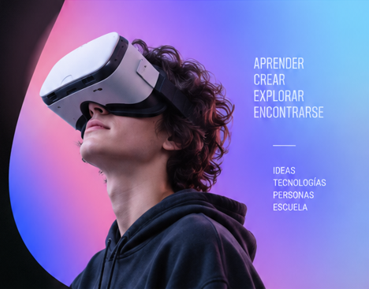

Charlas TEC
Grandes voces de la educación y la tecnología en el escenario principal.
- Charlas magistrales
- Paneles de referentes
- Espacios para aprender
Tecnología e innovación educativa · Ciudad de Buenos Aires
Una jornada para imaginar la escuela que viene, con la inteligencia artificial como eje central. Gratuita y abierta a toda la comunidad educativa de la Ciudad.

Durante la TecWeek ED vas a poder experimentar, formarte, escuchar especialistas, intercambiar con colegas y descubrir nuevas ideas a través de propuestas para toda la comunidad educativa.
Las secciones
Elegí cómo recorrer la jornada: charlas, talleres y espacios para visitar, aprender e interactuar.
Grandes voces de la educación y la tecnología en el escenario principal.
Debate abierto entre docentes, líderes, startups y gobierno.
Arte, diseño y creatividad potenciados por la tecnología.
IA y herramientas digitales al servicio del aula, hoy.
Tecnologías para ampliar las formas de aprender y construir conocimiento.
Espacio TecWeek
Un espacio lúdico e interactivo para leer, jugar y enfrentar desafíos sobre la vida digital, inspirado en la colección de cuentos El Bosque de las Decisiones. Con propuestas para Nivel Inicial, Primario y Secundario.
Espacio TecWeek
Un espacio para hacer una pausa, descansar y encontrarse con colegas.
En vivo
La TecWeek también se vive en vivo. Una transmisión durante toda la jornada con especialistas, referentes, docentes y estudiantes invitados para conversar sobre temas de actualidad en educación.
Diez proyectos de escuelas porteñas compiten por el premio 2026. Votá el que más te inspire: elegís uno solo y los resultados se publican al cierre de la votación.
Viernes 30 de octubre, de 8 a 18 h.
Usina del Arte, Agustín R. Caffarena 1, barrio de La Boca.
A docentes, estudiantes y toda la comunidad educativa de la Ciudad.
La Tecweek ED es la edición educativa de la Tecweek: Semana de las Tecnologías Emergentes y Creativas, una iniciativa del Gobierno de la Ciudad de Buenos Aires que reúne a los eventos más destacados de la industria tecnológica y creativa del país y del mundo.
Contenido pendiente de completar (incluir también información sobre micros/transporte).
A todos los docentes, estudiantes y comunidad educativa de la Ciudad interesados en aprender, pensar y experimentar en torno a temas de educación y tecnologías.
Sí. (Completar información e incluir link de inscripción cuando esté disponible.)
Sí. Consultá la agenda aquí.
Sí. El evento incluye propuestas relevantes para docentes de todos los niveles, y también otras diferenciadas para Nivel Inicial, Primario y Secundario.
Sí. Bienestar TEC ofrece un espacio para hacer una pausa, descansar y encontrarse con colegas.
Contenido pendiente de completar.
Contenido pendiente de completar.